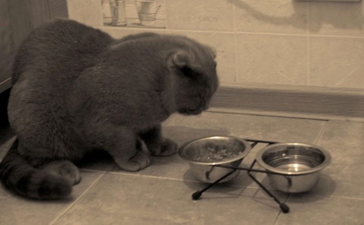

Все что нужно знать о шотландских вислоухих кошках:
Общая информация:
- Название породы:шотландская вислоухая кошка (скоттиш-фолд).
- Страна происхождения:Шотландия / Великобритания.
- Вес:4–5 кг.
- Высота в холке:до 30 см.
- Средняя продолжительность жизни:до 15 лет.
Как выглядит вислоухая кошка

Как кормить шотландских вислоухих кошек:
- Мясо должно присутствовать в рационе ежедневно, при каждом приеме пищи.
Выбирайте нежирные сорта: курица, кролик, говядина.
- Рыба в рационе нужна 2 раза в неделю. Желательны морские представители с низкой жирностью мяса.
- Каши давайте примерно 3-4 раза в неделю. Это может быть гречневая, ячменная, пшеничная.

Для подробной информации